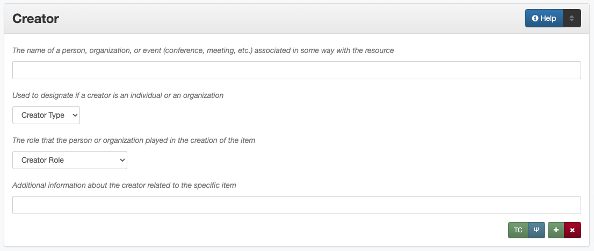

Creator
Definition
A person, agency, or organization primarily responsible for creating the intellectual content of the resource.
Where Can the Creator Information be Found?
In some cases, creators may come from accompanying or supplementary information, but they may also be found on:
Item Types |
Information Sources |
|---|---|
For text |
|
For images |
|
For maps |
|
For music scores |
|
For videos |
|
For sound files |
|
For computer files |
|
How Creator Works in the Metadata Form
- Parts:
Creator name – text field
Creator type – drop-down menu
Creator role – drop-down menu
Creator information – text field
- Repeatable?
Yes - to include multiple creators, click ‘Add’ to repeat all field parts
- Required?
No (more information)
How Should the Creator be Filled in?
General Creator Rules
If no creator information is readily available, leave the field blank
Only include individuals/organizations who were primarily responsible for the creation of the item
Secondary “creators” (e.g., agents responsible for only a portion of the work) should be entered as contributors instead
A name should never be entered as both a creator and a contributor; if an agent acts in multiple capacities, see the Role section for clarification
For more information about when a person/organization is a creator or a contributor, see our definition page
An entity must have a direct relationship to the item that can be explicated in order to be included as a creator (or contributor)
Include as many creators as are readily available
A creator name can only entered once per record; if an agent acts in multiple capacities, see the Role section for clarification
Place them in order of importance
If creators are equally important, list them in the order that they appear
If a document lists individuals as “et al.” include names of every individual author that is known for the item
If a document has an excessively large number of creators or authors (e.g., several hundred researchers) include the parent organizations as creators and the individual persons as contributors
For each creator the name, type, and role are required
If possible, consult an authority file to find the correct form of the name, such as:
The UNT Name App
A locally-developed utility
Note that organizational names generally reflect the name of the agency at the time the item was created – e.g., Texas (Republic) vs. Texas, or North Texas State University vs. University of North Texas – however, if possible, personal names will generally reflect a single, most current version when multiple names (initials, maiden names, etc.) are known to be used by a specific person
Creator Names
Personal Names
Guideline |
Examples |
|---|---|
If known, use the authorized form of the name from the Library of Congress Authorities |
Kittrell, Norman G. (Norman Goree), 1849-1927 |
If no authorized version is available, enter the most complete version of the name that is known using proper formatting: |
|
|
Hébert, Rachel Bluntzer |
|
Reid, Samuel C. |
|
Davis, J. Mark |
|
Blackburn, J. K. P. |
|
Hsieh, P.-C. |
|
Briscoe, Mary Jane Harris |
|
Donahue-Smith, James A.
Hasanul Basher, A. M.
|
|
de la Peña, L. R. |
|
Goldstein |
|
|
Use appropriate abbreviations: |
|
|
Morris, Mrs. Harry Joseph
Ross, Lieutenant
|
|
Roberts, Frank H. H., Jr. |
|
Name: Parera, Mahendra
Info: M.B.B.S., Ph.D., M.D.,
MRCPsych, FRANZCP; Albert Road
Clinic, Melbourne, Australia
|
|
Name: James, Thomas Leroy
Info: Thos. L. James
|
|
|
|
Name: Gaines, Ann
Info: Ann Sanders
Fore, Katherine Ellen Moser
Thompson, Henrietta Leonora Kempner
|
|
Name: Texas. Department of
Transportation.
Info: Staff Photographer
|
Organization Names
Guideline |
Examples |
|---|---|
|
Geological Survey (U.S.) |
For non-government or single-level bodies: |
|
|
Dallas Heritage Village |
|
|
|
Monsoon Asia Integrated Regional Study |
For hierarchical agencies or entities: |
|
|
Texas State College for Women. College of Industrial Arts. |
|
Dallas (Tex.). Police Department. |
|
Washington (State). State Building Code Advisory Council. Energy Code Committee. |
|
|
For United States agencies: |
|
|
United States. Bureau of Mines. |
|
United States. Central Intelligence Agency. |
|
Name: Texas. Parks and Wildlife
Department.
Version on text: Departamento
de Parques y Vida Silvestre de Texas
|
For non-U.S. organization: |
|
|
Name: Han’guk Kwahak Kisurwŏn
Info: Korea Advanced Institute of
Science and Technology
|
China (Republic : 1949- ). Huan jing bao hu shu. |
|
|
|
Creator Type
Choose the appropriate creator type:
Guideline |
Examples |
|---|---|
If the creator is an individual |
Personal |
If the creator is a company, organization, association, agency, or other institution |
Organization |
If it is unclear whether the creator name belongs to an individual or an organization, use “Personal” and format the name appropriately
|
In some rare and very specific cases, other options may apply:
Guideline |
Examples |
|---|---|
If the creator is a conference or other event that produces papers and materials (as an entity rather than named individual participants or a hosting organization)
|
Event |
If the creator is a computer program that generates data or files independently
|
Software |
Creator Role
Entering Roles
Choose the appropriate creator role from the controlled vocabulary
Guideline |
Examples |
|---|---|
If the role is not listed: |
|
|
Name: Phillips, Nelson
Role: Other
Info: Speaker; Associate Justice
or the Supreme Court
|
If more than one role applies to the creator: |
|
|
Name: Harden, Leland
Role: Editor
Info: Executive Editor; Sponsor
|
Assigning Roles
Although the same list of roles is available for both creators and contributors, some roles will generally only apply to contributors:
Agents who only had responsibility for a part, e.g., author of introduction, etc.; witness; consultant; expert
Agents who had an indirect relationship, e.g., funder, sponsor, former owner, donor
Additional explanation is on our creator and contributor definition page
The role should describe the action that the agent took in creating the item and it may not align with job titles or credentials, for example:
Agents |
Role |
Field |
Example |
|
|---|---|---|---|---|
“Director” |
|
Director |
Creator |
Name: Homer, Paula
Type: Personal
Role: Director
Info: UNT Opera Theater
|
|
n/a |
Creator |
Name: Texas. Department of
Transportation.
Type: Organization
Role: Author
Info: Phil Wilson, Executive Director
|
|
|
Author of introduction, etc. (or another appropriate role) |
Contributor |
Name: Camargo, Gene
Type: Personal
Role: Author of introduction, etc.
Info: Director of Building
Inspections
|
|
“Performer” |
|
Performer |
Creator |
Name: North Texas Wind Symphony
Type: Organization
Role: Performer
|
|
Originator, Researcher, or another appropriate role |
Creator |
Name: Quigg, Antonietta Salvatrice
Type: Personal
Role: Author
|
|
Contributor |
Name: Texas Water Development Board
Type: Organization
Role: Originator
|
|||
“Consultant” |
|
Author |
Creator |
Name: Kerley, Gerald Irwin
Type: Personal
Role: Author
Info: Kerley Technical Consultant,
Appomattox, VA)
|
|
Consultant |
Contributor |
Name: Kanto, Leonard E.
Type: Personal
Role: Consultant
Info: State of Texas Professional
Engineer; Consultant Engineer
|
Creator Info
Info is not required as part of the creator entry
This field is only for information about the creator listed in or directly related to the object
The info field is not intended for biographies or lengthy descriptions of the agent
It is not necessary to do research to find information; this field is only used for readily-available notes
Guideline |
Examples |
|---|---|
|
Co-Editor |
|
Geo. S. Anderson
1906-2005
Ph.D.; Texas A & M University
Real Estate Center
“By his son, the late Wilson Gregg”
(d. 1899)
|
|
LLNL
U.S. Department of Agriculture,
Office of Experiment Stations; W. O.
Atwater, Director
Susan Combs, Comptroller of Public
Accounts
|
|
California Univ., Berkeley, CA
(United States). Dept. of Geology
and Geophysics Lawrence Berkeley
Lab., CA (United States)
Freegift Vandervoort, of Carrizo
Springs, Texas ; F. Vandervoort
Member of the Association of
American Directory Publishers”
|
Other Examples:
Book
Name: Farrar, R. M.
Type: Personal
Role: Author
Yearbook
Name: North Texas Laboratory School
Type: Organization
Role: Author
Name: Mays, Sharon
Type: Personal
Role: Editor
Information: Co-Editor
Name: Wyss, Margaret
Type: Personal
Role: Editor
Information: Co-Editor
Genealogical newsletter
Name: Texas State Genealogical Society
Type: Organization
Role: Author
Name: Pryor, Frances
Type: Personal
Role: Editor
Atlas
Name: Geological Survey (U.S.)
Type: Organization
Role: Author
Information: U.S. Department of the Interior, Geological Survey; J. W. Powell, Director
Name: Dutton, Clarence E.
Type: Personal
Role: Author
Information: Capt. Clarence E. Dutton U.S.A. - Author of “Tertiary History of the Grand Canon District”
Collection of legal papers
Name: Blades, J. R.
Type: Personal
Role: Compiler
Information: Clerk, District Court, Henderson County
Painting
Name: Seurat, Georges, 1859-1891
Type: Personal
Role: Artist
Information: French
Research report
Name: Moris, Marlene C.
Type: Personal
Role: Author
Information: International Centre for Diffraction Data
Name: McMurdie, Howard F.
Type: Personal
Role: Author
Information: International Centre for Diffraction Data
Name: Evans, Eloise H.
Type: Personal
Role: Author
Information: International Centre for Diffraction Data
Name: Paretzkin, Boris
Type: Personal
Role: Author
Information: International Centre for Diffraction Data
Name: Parker, Harry S.
Type: Personal
Role: Author
Information: International Centre for Diffraction Data
Name: Panagiotopoulos, Nicholas C.
Type: Personal
Role: Author
Information: International Centre for Diffraction Data
Name: Hubbard, Camden R.
Type: Personal
Role: Author
Information: National Measurement Laboratory, National Bureau of Standards, Washington D.C.
Map
Name: Hill, Robert Thomas, 1858-1941
Type: Personal
Role: Cartographer
Information: “By Robert T. Hill”
Opera score
Name: Smith, Julia, 1905-1989
Type: Personal
Role: Composer
Information: Music by Julia Smith
Laws of Texas
Name: Texas (Republic). Secretary of State.
Type: Organization
Role: Compiler
City directory
Name: Morrison & Fourmy Directory Co.
Type: Organization
Role: Compiler
Information: Compilers, Publishers and Proprietors
Committee report
Name: Texas. Legislature. House of Representatives. Committee on Business and Industry.
Type: Organization
Role: Author
Photograph
Name: Dallas (Tex.). Police Department.
Type: Organization
Role: Photographer
Information: Staff photographer
Resources
UNT Creator Role controlled vocabulary
UNT Creator Type controlled vocabulary
Creator and Contributor Definitions (how to choose which one to use)
Library of Congress
Worldcat via FirstSearch (Accessible to UNT staff/students)
More Guidelines:
Comments
Name fields are connected to the UNT Name App, which will try to match text against local authority files. Editors should always choose an authorized form from the list if it is available.
The creator field is not constrained by the AACR2 practice of limiting creators to three or fewer names. Include as many creators as are readily available.
If the creator and the publisher are the same, repeat the name in the :doc: Publisher </fields/publisher> element.
Individuals or organizations with lesser responsibility for creation of the intellectual content of the resource should be recorded in the :doc: Contributor </fields/contributor> element instead of the creator element. Some examples of contributors are collector, donor, section editor, etc.
The creator roles come primarily from MARC relator codes; not all of the Library of Congress roles are included in the UNT system and several local codes have been added to the UNT list.